Regno Annulli Onde
Una classificazione puntuale degli annulli ad onde dettagliando le più piccole differenze porterebbe rapidamente ad ottenere una lunga lista di targhette tipo di probabile poco interesse. Ad esempio alcune targhette ad onde si sono danneggiate nel tempo per usura deformando le onde per poi perderne alcune. Elencare quindi tutte le possibili varianti potrebbe non essere utile. Contrariamente alle targhette figurate, dove furono usate delle macchine Krag per le impressioni continue e delle Flyer di varia derivazione per le targhette, qui è stato riscontrato l'uso, probabilmente di prova siccome molto limitato nel tempo, di altre macchine. Di seguito viene proposta una classificazione più generale che tiene conto di alcune caratteristiche principali degli annulli ad onde.
A partire dal 1910 sono stati usati in più uffici ed in modo discontinuo annulli meccanici di produzione americana (dalla ditta International Postal Supply di NewYork) del tipo ad onde con lettere. Le lettere possibili sono C, D, R e T. Idealmente secondo il costruttore, le lettere differenti dovevano indicare usi differenti della macchina annullatrice, in particolare C per la fase di raccolta della posta (Collected), D per indicarne lo stato di deposito (Deposited), R per l’annullamento in arrivo (Recived) e T per gli annulli di transito (Transited). In nessun ufficio sembra sia stato seguito alcun ordine per l’utilizzo. Da notare che la stessa ditta ha fornito a molte altre amministrazioni postali lo stesso tipo di annullo. Dopo questa prima fornitura negli anni furono realizzate altre targhette annulli ad onde, sempre con queste lettere, di lunghezza differente per essere adattati alle nuove macchine. Sono state utilizzate anche per posta militare. Sono inoltre state trovate impronte con lettere difettose o mancanti.
Flyer
Annulli a 7 onde con lunghezza di circa 45 mm
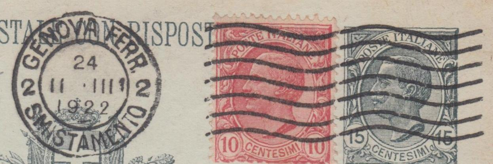
Annulli a 7 onde con lunghezza di circa 55 mm
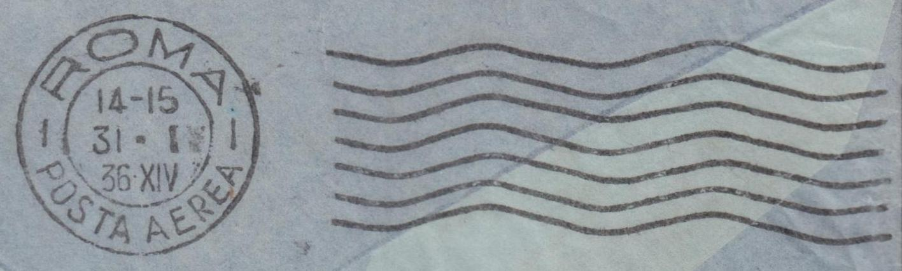
Annulli a 7 onde ~45 mm con lettera C, T, R e D
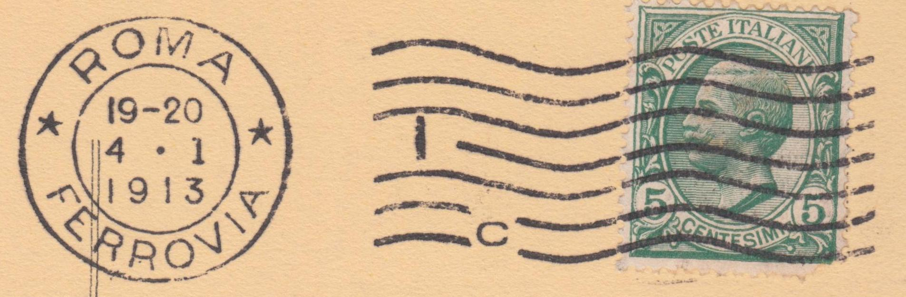
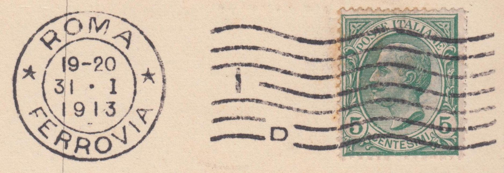
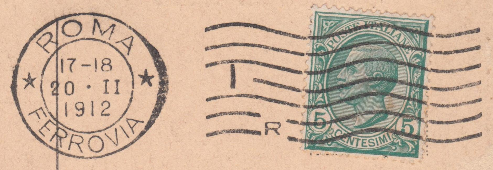
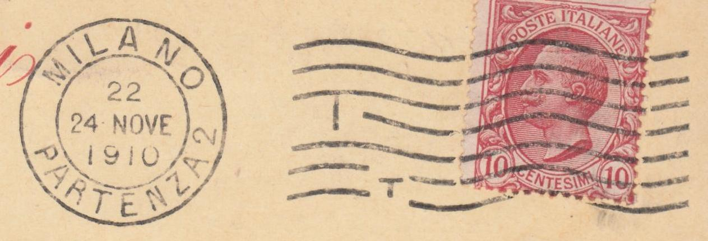
Annulli a 7 onde ~55 mm con lettera C, T, R e D
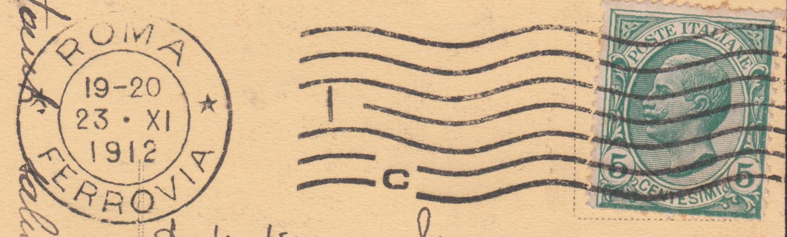
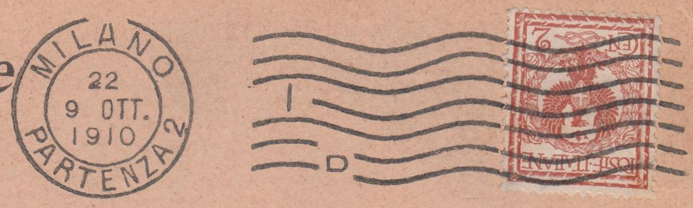
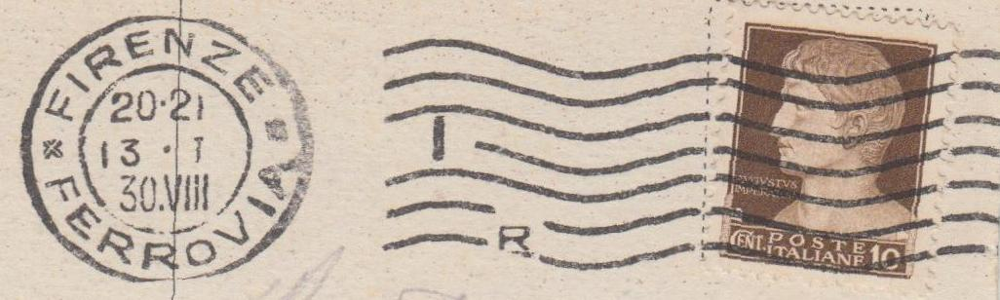
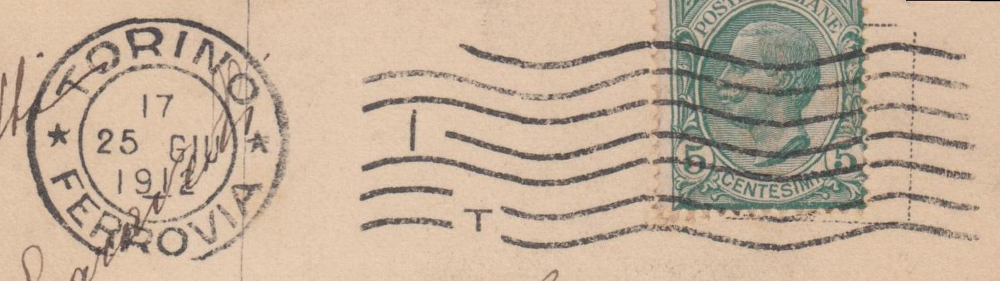
Annulli a onde molto accentuate
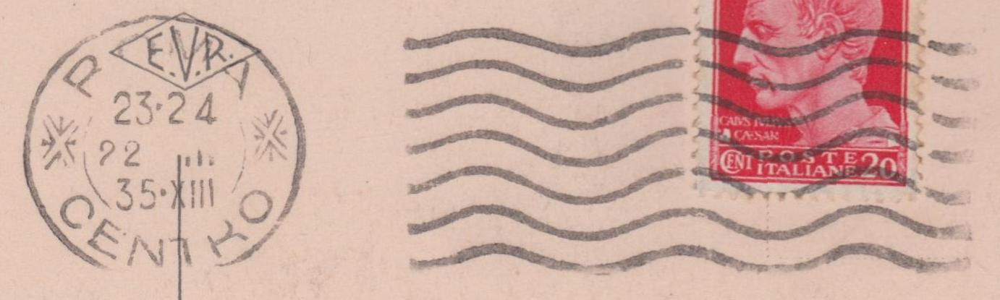
Annulli a onde poco accentuate
Annulli a 9 onde
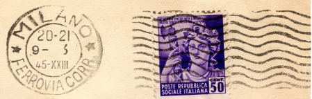
Universal
Annulli a 9 onde
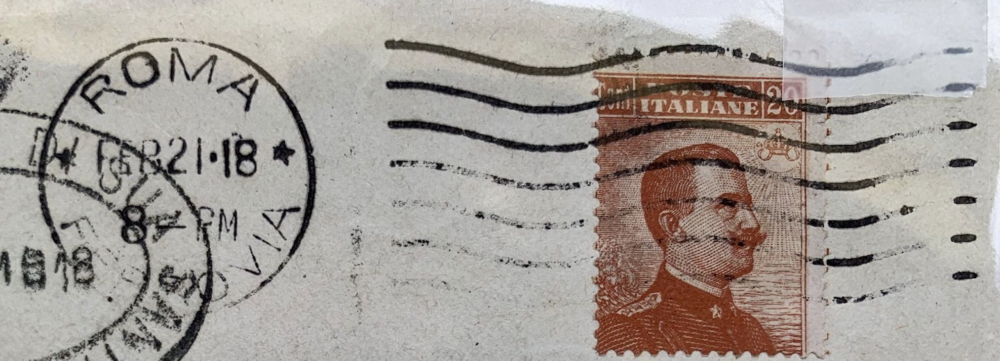
Macchina non nota
Annulli a 9 onde
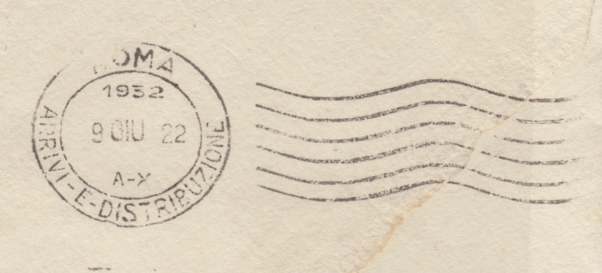
Catalogo degli annulli ad onde
| Località | Den. Ufficio | Anno | Descrizione | Datario |
|---|---|---|---|---|